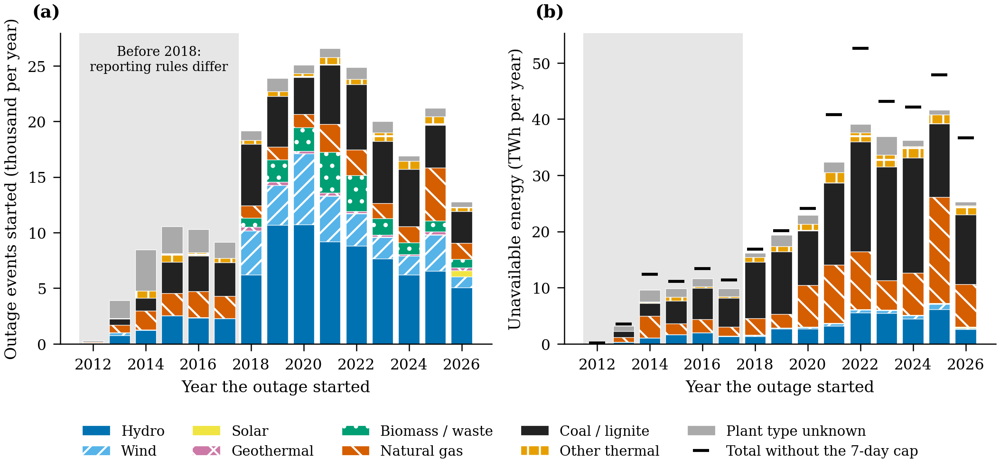
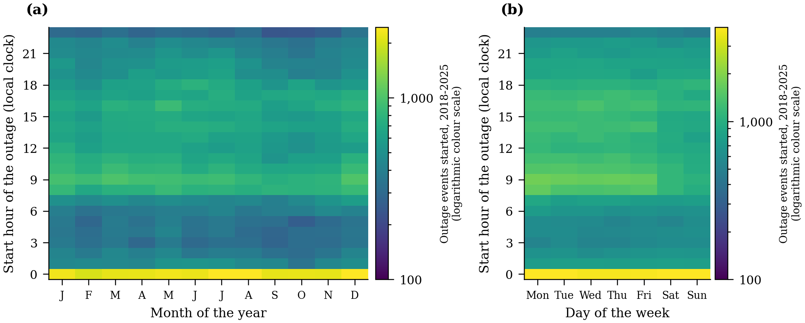
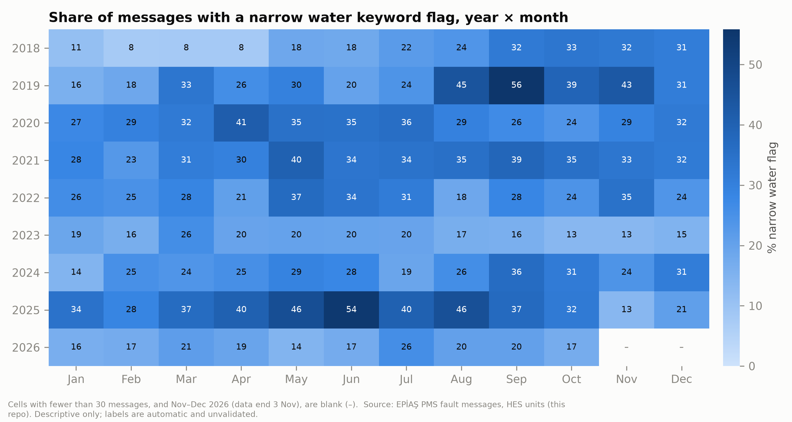

Grid resilience and storage
How battery storage, including electric-vehicle batteries, can keep customers supplied during outages, and where charging infrastructure falls short.
Research
Four connected areas, from the inverter to the national electricity market.
How battery storage, including electric-vehicle batteries, can keep customers supplied during outages, and where charging infrastructure falls short.
Using Türkiye's public electricity market data to describe plant outages, hydropower and wind generation, and to forecast them.
Where solar generation and agriculture can share the same land, and how solar-powered irrigation compares in cost.
Detecting islanding in microgrids with deep learning, and studying harmonic distortion in inverter-based systems.
Power plants in Türkiye report outages and maintenance as public market messages. These descriptive figures come from my analysis of those messages. They are independent academic work and are not published by the market operator.

(a) Outage events started each year, by plant type. (b) Unavailable energy each year: installed minus available capacity, multiplied by duration, with each event capped at seven days. Black dashes show the totals without the cap.
Reporting rules differ before 2018 (grey area), so earlier years are not directly comparable. 2026 is a partial year.
Source: EPİAŞ Transparency Platform, market message system (PMS). Own calculations.

Start hour of outage events by (a) month and (b) weekday, 2018–2025, on a logarithmic colour scale.
The bright band at hour 0 mainly reflects how messages are entered (declarations that start at 00:00), not a physical peak at midnight.
Source: EPİAŞ Transparency Platform, market message system (PMS). Own calculations.

Share of hydropower fault messages, by year and month, whose text matches a narrow set of water-related keywords.
Descriptive only. The labels are automatic and have not been validated by hand. Cells with fewer than 30 messages are left blank.
Source: EPİAŞ Transparency Platform, market message system (PMS), hydropower units. Own calculations.